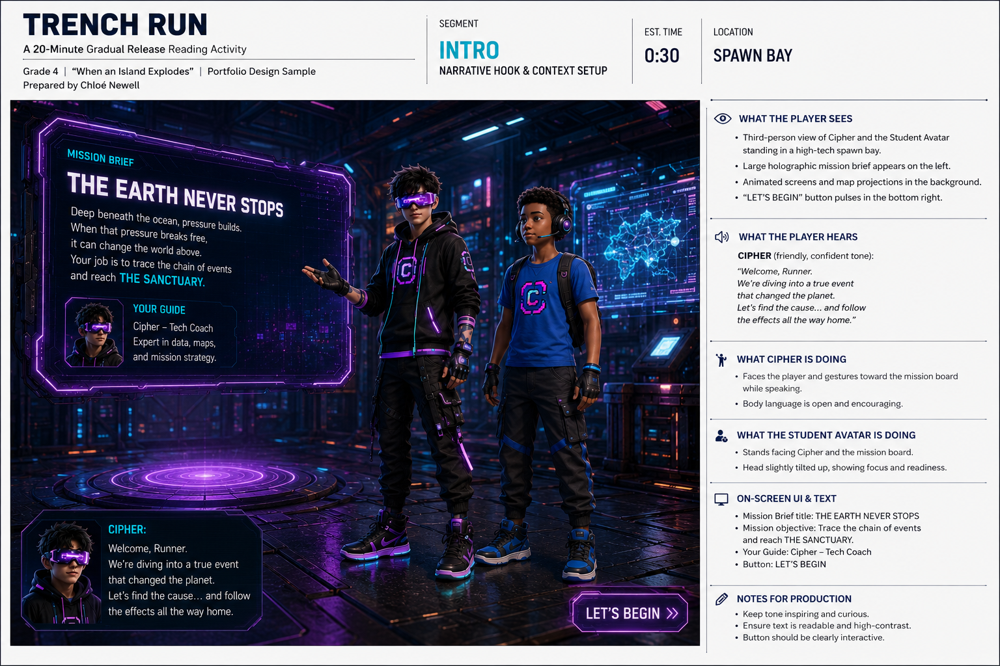
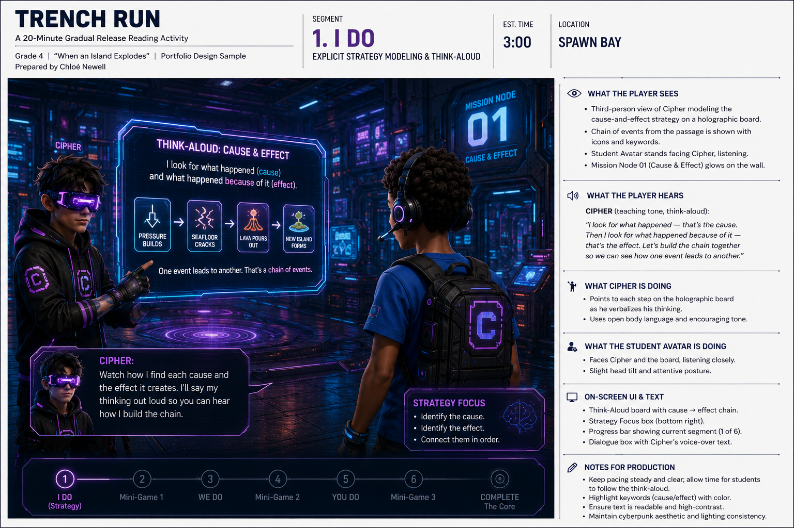
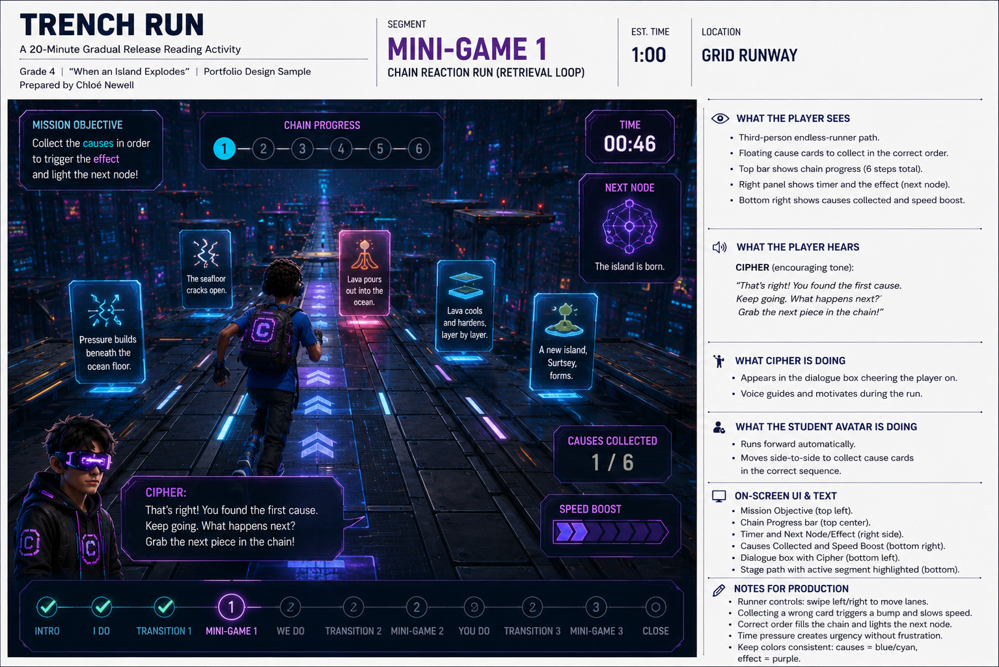
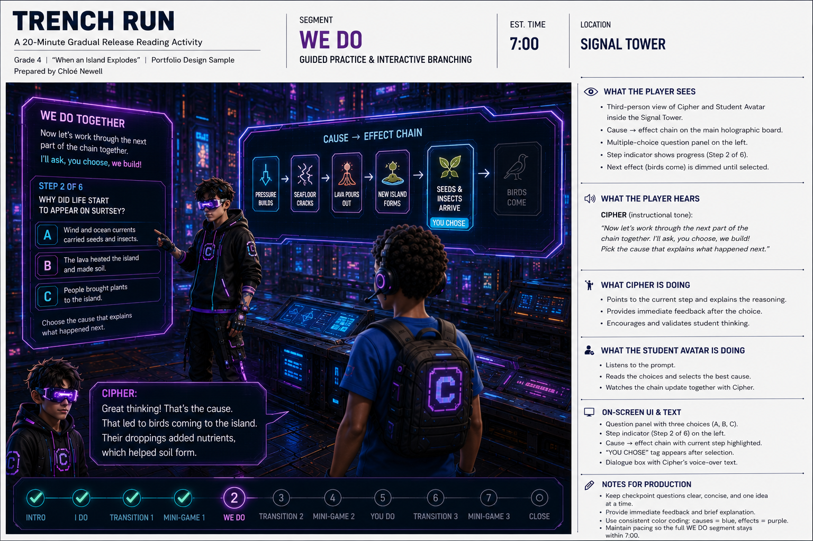
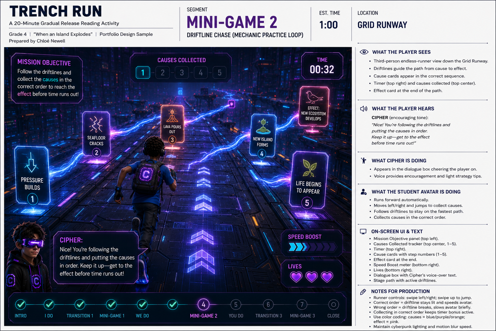
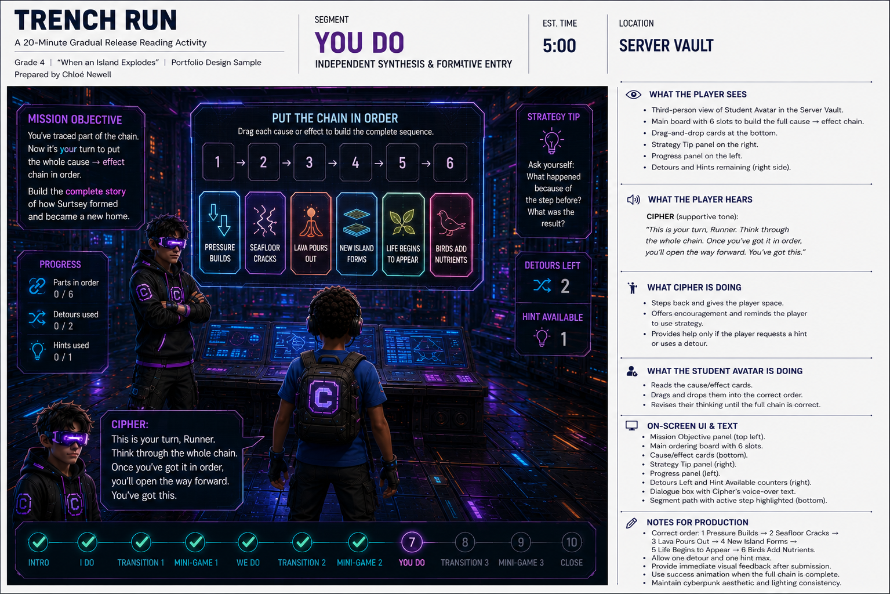
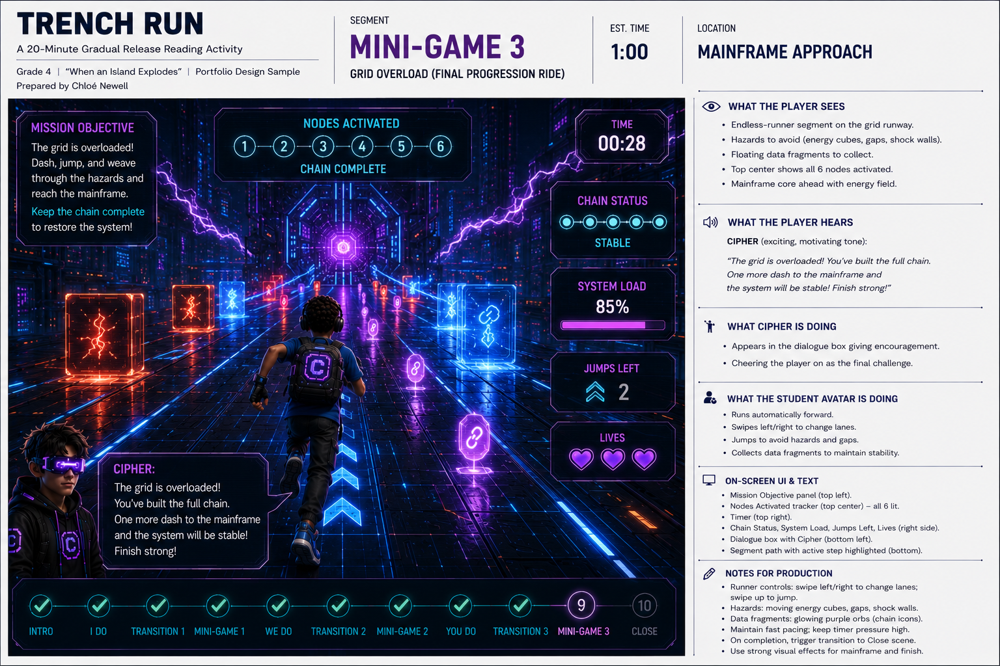
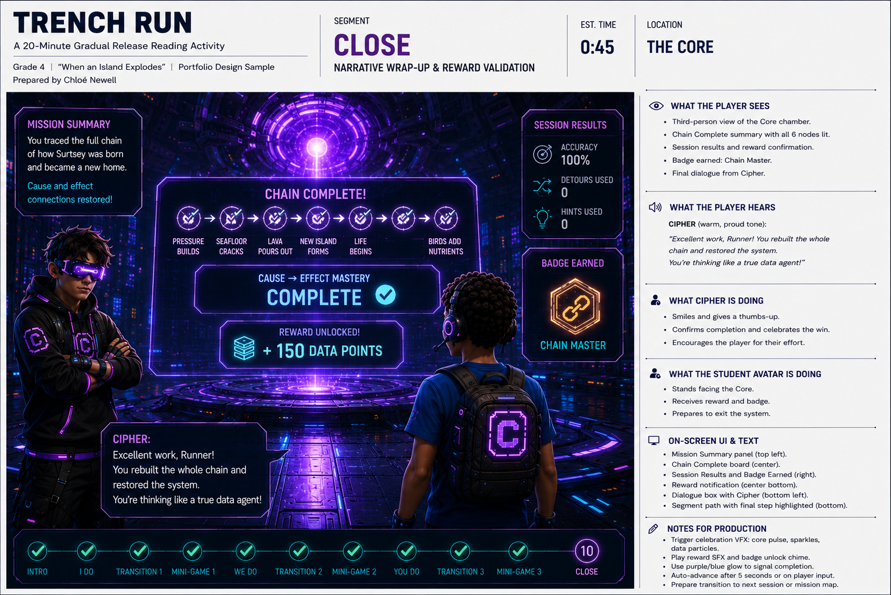

A 20-minute independent Grade 4 digital activity mapping directly to CCSS.ELA-Literacy.RI.4.3 (Cause & Effect / Relationships Between Events), using a gradual-release arc — I DO, WE DO, YOU DO — with three short mini-games that turn each cause-effect link the student traces into another node lit up on the Trench grid.
High Concept: a guided third-person 3D adventure where the student's Runner avatar drops into a cyberpunk data-world alongside Cipher, a scripted teen tech-mentor NPC. Pedagogical progression maps directly to a chain of "Data Gates" — tracing cause and effect is the structural hero of a continuous world.
| Segment | Instructional Action | Location | Budget |
|---|---|---|---|
| Intro | Narrative Hook & Context Setup | Spawn Bay | 0:30 |
| I DO | Explicit Strategy Modeling & Think-Aloud | Spawn Bay | 3:00 |
| Transition 1 | Traversal, Gate Breach, Console Swap | Spawn Bay → Grid | 0:15 |
| Mini-Game 1 | Chain Reaction Run (Retrieval Loop) | Grid Runway | 1:00 |
| WE DO | Guided Practice & Interactive Branching | Signal Tower | 7:00 |
| Transition 2 | Traversal, Gate Breach, Console Swap | Signal Tower → Grid | 0:15 |
| Mini-Game 2 | Driftline Chase (Mechanic Practice Loop) | Grid Runway | 1:00 |
| YOU DO | Independent Synthesis & Formative Entry | Server Vault | 5:00 |
| Transition 3 | Traversal, Gate Breach, Console Swap | Vault → Mainframe | 0:15 |
| Mini-Game 3 | Grid Overload (Final Progression Ride) | Mainframe Approach | 1:00 |
| Close | Narrative Wrap-Up & Reward Validation | The Core | 0:45 |
| TOTAL | Continuous Uninterrupted 3D Gameplay | Linear Map Sequence | 20:00 |
Mastery of RI.4.3 isn't proven via one session — this module is a node in an adaptive sequence, powered by the detour/checkpoint telemetry already built into WE DO and YOU DO. No separate tracking system required.
Paragraph 1: In 1963, pressure from magma deep beneath the ocean floor near Iceland finally became too strong to hold back. The seafloor cracked open, and lava poured into the freezing ocean water above it. Because the lava cooled and hardened almost instantly on contact with the cold sea, layer after layer piled up in the same spot. Within days, a brand-new island called Surtsey had risen out of the water where there had been nothing but open ocean before.
Paragraph 2: At first, Surtsey was nothing but bare black rock, too harsh for anything to survive. But because wind and ocean currents kept carrying in seeds, insects, and driftwood, tiny signs of life slowly began to appear. Birds were drawn to the rocky cliffs, and their droppings added nutrients to the ground. As a result, thin patches of soil formed in places that had been solid rock only years before. Scientists are still tracking exactly how fast a totally lifeless island can transform into one with real plants, insects, and nesting birds.
Paragraph 3: Surtsey didn't stay the same size for long. Because ocean waves constantly crash against its soft volcanic rock, large sections of the island have slowly worn away since it first formed. As a result, Surtsey is now less than half the size it was in the 1960s. Scientists protect the island by banning visitors, so that the plants and animals that arrive keep arriving naturally, without any human footprints changing the pattern.

"Yo! Signal's live. Welcome to the Trench, little bro. I'm Cipher — think of me as your wingman down here. Somethin' just lit up on the grid: a whole island popped up outta nowhere back in '63. No blueprint, no build crew. We're gonna trace exactly what caused it. You ready to run this with me?"

"Check it, little bro. Every time I scan a text log, I'm not just huntin' for what happened — I'm huntin' for WHY. One thing causes the next thing, like dominoes. Watch me trace it."
"First pass: magma's pushin' up, pressure buildin' for who knows how long. That's cause number one. Then — crack — the seafloor busts open. That's the effect of the pressure, but it's ALSO the cause of what happens next: lava floods into the cold water."
"Here's the key move, right in the middle: 'Because the lava cooled and hardened almost instantly.' See that word 'because'? That's the log handin' me the wiring diagram for free. Cold water touches lava → lava hardens fast → layers stack up → island rises. One chain, four links."
"That's the move every time: find the trigger, follow the 'because,' trace where each effect turns into the next cause."
Cipher: "Which chain shows what actually happened, in order?"

"Feel the chain, don't just read it. Let's run it."

"Nice run. This next log's trickier — it's not one chain, it's a chain that KEEPS branching. Let's trace it together."
"Okay. Bare rock, nothin' survives — that's the starting state. Then: 'because wind and ocean currents kept carrying in seeds, insects, driftwood' — there's that 'because' again. Wind and currents brought stuff in → tiny life appeared. That's link one."
Q: "What caused tiny signs of life to start appearing on Surtsey?"
"Now the chain branches again. Birds show up — but why do THEY matter to the story?"
Q: "Which sentence shows the EFFECT of birds visiting the rocky cliffs?"
"One more link, you're on your own. Type it: because of the nutrients, what happened to the ground?"

"You just traced how the wind and currents got stuff movin' — let's ride that same current and see what it's carryin'."

"You've been tracin' more of this chain yourself every round — that's exactly right. You've got two chains locked now: how the island got BORN, and how it started comin' ALIVE. Let's link those into one chain first — then I've got somethin' you haven't seen yet."
Sentence frame: "An eruption caused ____, and after that, ____ caused life to start appearing."
"This one's brand new — nobody's walked you through this log. I'm not gonna trace it with you first. Read it, then you're flying solo."
Empty text box: "Real test. No frame, no walkthrough. One sentence: what caused Surtsey to shrink?"

"One last run. Everything you traced is about to fire the whole system. Let's light it up."

"You just did something most scanners can't — you didn't just read what happened, you traced WHY it happened, link by link."
"Next log, we're gonna hit a chain that branches even further — one cause, three different effects. Get ready."
"Catch you at the next Gate, little bro."